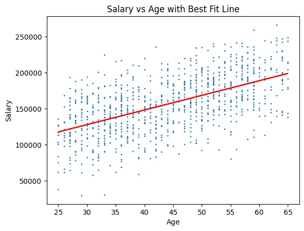
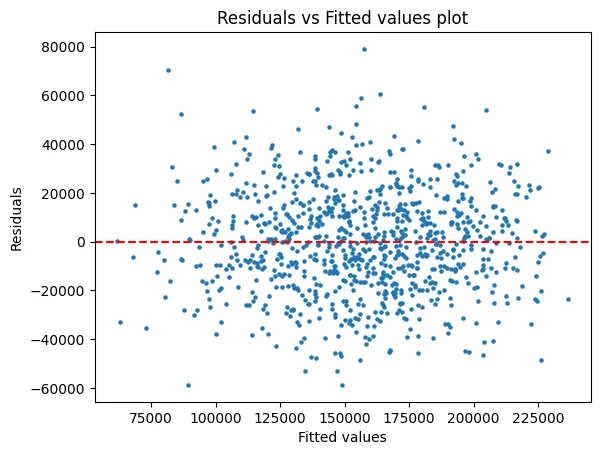

Research Analyst at FreeWill. MS candidate at LUMS. Lahore, Pakistan.
Ibrahim Javed
Data in. Decisions out.
I’m a research and data analyst who turns messy information into decisions people can act on, uses AI to make the whole team faster, and leads the people doing the work.
No screenshots. Click, type, and try to break them.
FreeWill, Research Analyst
The QA tool that turned 3 days into 1
Data quality
Automation
JSON
NTEE codes
Grant opportunity records have to be complete and consistent before they reach partners. Checking them by hand took 3 days. I built a tool that does the same checks in the browser.
What it checks
Every field is present, the right type, and within its allowed values and word limits.
Contradictions between fields, such as a funding minimum above the maximum or a deadline before the opening date.
NTEE codes, which it converts to an explained form.
Date and stage structure, for records that run in cycles.
Paste one record or a large batch, get a verdict for each, fix problems in place, and download the result. It checks structure and rules. Whether a value matches the funder’s own page is still a source-verification step. It runs in the browser and uploads nothing.
Before3 days
With the tool1 day
Opportunity QA, running on invented sample records
Try the tool
Loads three invented records: one that needs review, one with seven errors, and one with contradictions.
The sample did not load on its own. Paste this JSON into the tool.
FreeWill, Research Analyst
Breaking things on purpose: test sites for our update flow
GitHub
GitHub Pages
Git branches and tags
Automation
Websites change, and our data has to change with them. To check that our auto-update flow catches those changes and carries them into the data onboarding system, I built controlled test sites. Each is an exact copy of a funder website, with 20 test-case branches. The sites and the flow are internal to my team, so this page walks through the method with generic examples instead.
Mirror a funder site as an exact static copy on GitHub Pages, with relative links.
List every file and its original URL in a manifest, including links that were already dead on the live site. Those stay on purpose.
Tag the untouched copy baseline-v1, and stop git from altering file bytes so content hashes match on every machine.
Make each test case a branch. Merging it to main switches it on.
Check the flow picked up the change, then reset to the baseline.
One test site’s history. Five of the 20 test-case branches are drawn.
Walk through a test case
Generic examples to show the method. The real sites and flow stay internal.
main is on: baseline-v1, untouched
Pick a change, then merge it to main.
Illustrative output.
Revcloud, Strategic Alliance Analyst
100 to 3,000 leads a day, and a dashboard that updated itself
Looker
SQL
Google Sheets
Klaviyo
Message Media
OneSignal
I planned and ran SMS campaigns through Klaviyo, Message Media, and OneSignal, and grew both the audience and the leads they produced.
To keep everyone looking at the same numbers, I designed a Looker dashboard that tracked the key metrics (CVR, RPL, RPC) over time and refreshed on its own every day. It showed overall performance and broke it down by account, landing page, creative, and audience.
Return on ad spend moved from 5x to 7x.
Campaign audience
Before10,000
After30,000
Leads a day
Before100
After3,000
Bars are drawn to scale.
The dashboard idea, rebuilt with invented data
Every number below is made up for this demo. It shows the layout, the daily refresh idea, and the breakdowns I built: overall, by account, by landing page, by creative, and by audience.
Hover or tap the chart to read a day.
Healthy Herbals, Research Analyst
How big is Pakistan’s protein powder market? Edit the model and see.
Excel
Market sizing
Field research
Healthy Herbals needed to know how big the protein powder opportunity really was. I built the total, serviceable, and obtainable market city by city and for Pakistan as a whole. Change any input and watch the funnel move.
How the research connected
Field research. I visited 30+ pharmacies in Lahore to check the desk research against the market.
Market sizing. The model on this page.
Funding view. I reviewed 10+ venture capital firms to see who funds this space and what they look for.
Recommendations. Market reports that helped management refine products and go-to-market plans.
The research covered whey protein, lozenges, Korean ginseng, and women’s hormonal supplements. This model is the protein powder piece.
About 1.2 g per kg of body weight for a 66 kg adult, 3 sessions a week.
Total market (TAM)Every gym-goer buying the protein they need.
Serviceable market (SAM)Gym-goers who already spend on protein supplements.
Obtainable market (SOM)Your share of the serviceable market.
Annual values in Pakistani rupees. Bar widths show the order of the funnel, not scale. The US dollar figure uses PKR 280 to the dollar.
Valuing a company, line by line
Statements, ratios, forecasts, and valuation models, all built in Excel. Change a factor and watch the forecast move.
Valuing Philip Morris (Pakistan) Limited
A full equity valuation of a listed tobacco company: five years of financial statements, horizontal and vertical analysis of 18 line items, forecasts for 2024 to 2028 built from economic, industry, and company factors, then a cost of equity and valuation models. It was delivered as a written report and a 303-slide deck.
Excel
Financial statement analysis
Forecasting
CAPM
Valuation models
18 line itemsanalyzed and forecast, 10 from the balance sheet and 8 from the income statement
8.1% a yearsales growth from 2019 to 2023, PKR 13.3B to PKR 18.2B
0.69levered beta, from 57 monthly returns against the KSE-100
30.33 to 6.17earnings per share, 2022 to 2023
What I found
2023 was a margin squeeze, not just a sales dip. Sales fell 8.2% to PKR 18.2B, but cost of sales rose from 55.2% to 66.3% of sales and distribution and marketing from 16.8% to 30.6%. After those two costs, 3.1% of sales was left, down from 28.1% in 2022.
The balance sheet changed shape. Stock in trade nearly doubled (PKR 6.1B to 12.0B) and trade and other payables more than tripled (PKR 4.3B to 13.5B). Cash grew from PKR 0.33B to PKR 9.06B, which the report links to asset disposals and withheld dividends.
Every forecast has named causes. Each line is a weighted sum of factors such as inflation, tobacco taxation, illicit trade, rupee devaluation, and the shift to reduced-risk products like IQOS and Zyn. I cross-checked against naive, 3-year moving average, and Excel forecasts.
Cost of equity: a levered beta of 0.69 (0.47 unlevered), a risk-free rate of 11.68%, and a mean monthly market return of -0.94% give a cost of equity of 2.95% and a WACC of 4.17%. Sustainable growth came out at 2.44% (100% retention times a 2.44% return on equity).
The valuation models disagreed. The accounting valuation and free cash flow models pointed to undervalued. The P/E model pointed to overvalued, with an actual leading P/E of 71.4 against an intrinsic 20.3. The dividend discount model did not apply, since no dividends were declared in 2023. The P/E result rests on thin 2023 earnings, while the other two rely on forecasts.
The company: an affiliate of Philip Morris International with one cigarette factory, one leaf-threshing plant, 15 sales offices, and 739 employees. Brands include Marlboro, Parliament, and L&M.
The 2023 squeeze, 2019 to 2023
How steady was each line?
Average error of a naive "same as last year" forecast, 2020 to 2023. Lower means a steadier line.
Forecast builder: change a factor, see the 2024 forecast
These are the weighted-factor forecasts from the report, and the defaults reproduce its numbers. Edit any growth rate or weight.
Horizontal analysis (this year - last year) / last year
Vertical analysis line item / total assets (or sales)
Weighted forecast next year = this year x (1 + sum of growth x weight)
Limits: the cost of equity of 2.95% reflects a negative average market return (-0.94% a month) over the 57-month window. A longer window or an estimated market premium would raise it and lower the intrinsic values.
What really moves the number?
Five analyses in Python and Stata. Each starts with a question, ends with a result, and lets you poke the model.
Why bigger houses looked cheaper
A regression analysis of 100 houses, with their type, size, distance, and PM2.5 and NO2 levels. The interesting part was how often the first answer was wrong.
Python
pandas
statsmodels
seaborn
0.927R² of the final log-log model, up from 0.657 with size alone
-$323 to +$156price change per sq ft, before and after controlling for house type
32 to 1.3variance inflation of the pollution measures, after combining PM2.5 and NO2
0.0008 to 0.42Breusch-Pagan p-value, linear model versus log-log model
What I found
Size alone gave the wrong sign. Price appeared to fall by $323 for every extra square foot, because condos are small and expensive while ranches are large and cheap. With house type in the model, size adds $156 per square foot (p = 0.013).
PM2.5 and NO2 carried the same signal. Both had variance inflation factors near 32 and neither was significant (p = 0.25 and 0.46). I combined them into one pollution index, the average of their z-scores, which was significant (p = 0.040) with a factor of 1.28.
The linear model broke an assumption. A Breusch-Pagan test showed non-constant error variance (p = 0.0008). Switching to a log-log model fixed it (p = 0.42). The residuals are still not perfectly normal (Jarque-Bera p = 0.0125).
In the log-log model, a 1% larger house is about 0.35% more expensive, 1% farther away is 0.14% cheaper, and 1% more pollution is 0.18% cheaper. Compared with condos, ranches are about 65% cheaper, split-levels 52%, and townhouses 31%, holding the rest equal.
One concrete prediction: a 1,600 sq ft townhouse comes out at $800,642 in the linear model with type, with a 95% confidence interval for the mean of $748,844 to $852,440.
Try the final model
An estimate from the log-log model. Stay inside the data’s range for sensible answers.
Estimated price
How the fit improved
The last model predicts log price, so its R² is not strictly comparable with the others.
Limits: 100 houses, and the residuals still depart from normality, so the intervals should be read with care. Type and size remain correlated (variance inflation 10 to 17 in the log-log model).
Where does revenue peak? Slide the price.
A demand model on 54 months of data (April 2011 to September 2015), then a price simulation to find the revenue-maximizing price.
Python
statsmodels
Simulation
Matplotlib
54monthly observations of demand, prices, income, and promotion spend
0.695 to 0.830R² without and with month controls
-137 unitsdemand change for each 1-unit price increase (p = 0.004)
93.38 vs 99.38revenue-maximizing price without and with seasonality
What I found
The demand model: demand = 5,025 − 136.6 × own price + 117.4 × competitor price − 0.28 × income + 7.87 × promotion spend. Own price lowers demand, a competitor’s price raises it (p = 0.004 each), and promotion spend adds 7.9 units per unit spent (p < 0.001).
Income has a negative sign, which is unusual. It is not significant at 5% in the first model (p = 0.068) and is in the model with months (p = 0.030), so I would treat that result with caution.
Seasonality changed the answer. Adding month controls lifted R² to 0.830 (adjusted 0.763), and December demand is lower by about 1,187 units (p = 0.012). I then simulated 20 prices from 91.38 to 110.38 with the other inputs held fixed.
The peak moves. Without months, revenue peaks near a price of 93.38 (about 1.19 million). With the October effect, it peaks near 99.38 (about 1.206 million).
The curve is flat near the top. Between prices of 91 and 100, predicted revenue differs by under 1%, so price alone is a weak revenue lever in this range.
Price simulator
Predicted demand and revenue
Competitor price held at 109.14, income per capita at 7,620.6, and promotion spend at 1,247.31.
Limits: 54 months of data, and the simulation holds everything but price fixed, so it cannot show how competitors would react. The model with months has a high condition number, a sign of multicollinearity.
What really drives salary?
From a simple age-and-salary relationship to a multiple regression on gender, age, rating, degree, and division. The dataset has 1,000 employee records, 920 of them complete.
Python
pandas
statsmodels
SciPy
r = 0.56correlation of salary and age, 95% CI 0.51 to 0.61
0.318 to 0.713R² for age alone versus the full model
+$1,996salary per extra year of age, other factors fixed
$148,207predicted salary at age 40, 95% prediction interval $84,125 to $212,289
What I found
Age alone explains 31.8% of salary variation, at about $2,027 per year (p < 0.001).
The full model raises that to 71.3% (adjusted 70.9%). Each rating point adds about $5,073.
Degree, compared with an Associate’s degree: Bachelor’s +$7,047, Master’s +$12,790, Ph.D. +$18,870, and High School −$4,756. All are significant at 5%.
Division, compared with Accounting: Operations is $31,380 lower (p < 0.001), Corporate $8,024 higher (p = 0.030), and Sales $7,304 lower (p = 0.030). Engineering and Human Resources are not significantly different.
Gender: male employees earn about $8,537 more with the other factors held fixed (p < 0.001). This is observational data, so it points to a question worth investigating, not a cause.
Diagnostics: the residual plot fans out as fitted salary rises, which signals non-constant variance. The Q-Q plot is mostly straight. My next step would be robust standard errors or a transformation.
Effect on salary, with 95% confidence intervals
Filled dots are significant at 5%. Degree is compared with an Associate’s degree, division with Accounting, and gender with female.

Salary against age, with the best-fit line.

Residuals against fitted values. The spread widens.
Six time series models fitted to 19 years of revenue (2000 to 2018): linear, quadratic, and exponential trends, plus three autoregressive models. I compared them by residual patterns and mean absolute deviation.
Python
statsmodels
Time series
Autocorrelation (ACF)
19 yearsof annual revenue, 2000 to 2018
AR(2)the best model by mean absolute deviation
2.08 vs 5.03mean absolute deviation, AR(2) versus the linear trend
59% loweraverage error than the linear trend, over 2003 to 2018
What I found
The shape of the series: revenue dipped slightly from 2000 to 2002, rose strongly until about 2012 to 2013, then declined through 2018. A straight line or a steady growth rate cannot follow that.
The linear trend fails visibly. Its residuals form a clear S-shape and show strong autocorrelation. The exponential trend, at about 5.0% growth a year, has the same problem.
The quadratic trend captures the curve, with a significant squared term (p = 0.033) and fewer residual patterns, but it still fits worse than the autoregressive models.
AR(2) wins. Revenue this year ≈ 4.57 + 1.386 × last year − 0.516 × two years ago. Adding a third lag did not help (p = 0.72 for the third lag, mean absolute deviation 2.21).
Model comparison, 2003 to 2018
Mean absolute deviation, lower is better. In-sample fit over 16 years.
Limits: the comparison is in-sample over 16 years. A hold-out test on the most recent years would be the next step before trusting any forecast.
Fintech in Pakistan: men and women adopt it for different reasons
My undergraduate thesis at Lahore School of Economics (Spring 2025). I surveyed 334 bank users online and asked what makes people intend to use digital payments, then modeled that intent on a 5-point scale with ordered logistic regression in Stata. The main surprise was that men and women are driven by different things.
Stata
Ordered logistic regression
Survey research
Odds ratios
Model selection
334survey respondents, 152 men and 182 women
12 modelsfour nested specifications each for everyone, men, and women
0.48odds ratio for women versus men on higher intent, with controls (p < 0.01)
4.18 vs 3.59average future intent, men versus women (t = 4.27)
What I found
A large gender gap. Men average 4.18 on the 5-point intent scale and women 3.59 (t = 4.27, p < 0.01). Even with controls, being female roughly halves the odds of a higher intent score (odds ratio 0.48 to 0.52, p < 0.01).
Five drivers across the whole sample. In the fullest model, technology experience (odds ratio 1.39), awareness (2.21), current fintech use (2.03), security (1.65), and convenience (1.91) all raise the odds of higher intent (p < 0.05). Older respondents are less likely (0.63, p < 0.1), and private-sector workers more likely (2.59, p < 0.05).
Several expected drivers did not matter. Privacy, ease of use, social media influence, reliability, income, family influence, and location were not significant once the others were in the model.
Men and women follow different paths. For men, privacy (1.77), ease of use (1.65), education (2.03), and income (1.83) matter, while social media influence points the other way (0.70). For women, convenience is the strongest driver (2.68), alongside technology experience (1.85), awareness (2.08), security (1.69), and reliability (1.59).
Adoption is not simply higher with income. 84% of middle-income respondents (PKR 50,001 to 200,000) already use fintech, against 69.7% above PKR 1 million and 62.8% below PKR 50,000. Education matters more: the share in the top two intent categories rises from 58.2% (high school) to 70% (bachelor’s) and 83.1% (master’s or higher).
How I built the models
Model 1: attitudes and experience (technology, awareness, current use, security, reliability, losses, privacy, ease, convenience, social media).
Model 2: adds age, gender, occupation, and education.
Model 3: adds income and family influence.
Model 4: adds location.
I compared nested models with likelihood-ratio tests and AIC. For everyone, adding personal characteristics improved the fit (LR χ²(8) = 24.99, p = 0.0016), while family and location did not (p = 0.19 and 0.18).
Odds-ratio explorer
Every regression from the thesis. An odds ratio above 1 means higher odds of a higher intent score. Bars are 95% confidence intervals. Hover a row for the exact values.
Descriptive statistics and t-tests, men versus women
Variable
All (334)
Men (152)
Women (182)
t-test
Future intent (1 to 5)
3.86
4.18
3.59
4.27***
Uses fintech now (0 or 1)
0.77
0.87
0.69
3.90***
Aware of fintech (0 or 1)
0.87
0.91
0.83
2.29**
Technology experience (0 to 3)
2.03
2.14
1.94
2.06**
Reliability (0 to 4)
2.68
2.79
2.59
1.94*
Security (0 to 4)
2.52
2.55
2.50
0.49
Perceived losses (0 to 4)
2.40
2.42
2.39
0.26
Ease of use (0 to 4)
2.82
2.84
2.81
0.36
Convenience (0 to 4)
3.10
3.16
3.04
1.22
Family influence (0 to 4)
2.67
2.64
2.70
-0.57
Social media influence (0 to 4)
2.48
2.41
2.54
1.10
Age group (1 to 3)
1.43
1.28
1.56
-4.05***
Income band (1 to 5)
2.81
2.80
2.81
-0.04
Education (1 to 4)
2.67
2.73
2.63
1.24
The t-test compares men with women. *** p < 0.01, ** p < 0.05, * p < 0.1. Privacy is not in the t-test table.
Limits: an online survey of 334 people, 181 of them students and most from metropolitan areas, with more women than men. It is a snapshot of self-reported intentions, so the results are associations, not causes. With only a few unemployed men, that estimate was unstable and I left it out of the chart.
Everything I’ve built
Work projects and coursework in one place. Filter by the skill you want to see.
Opportunity QA tool
FreeWill
Cut a 3-day quality review to 1 day. Try it with sample records.
Researched and standardized data on 400,000+ funders with Python and LLMs, checked against sources.
Python
LLMs
Philip Morris Pakistan valuation
Equity valuation project
Five years of statements, 18 forecast line items built from named factors, a cost of equity, and valuation models. Includes an editable forecast builder.
A portfolio tracker in Google Apps Script that pulls live prices from sarmaaya.pk and Yahoo Finance.
Google Apps Script
Google Sheets
Fintech adoption in Pakistan
Undergraduate thesis
An online survey of 334 bank users, analyzed with ordered logistic regression in Stata. Women have about half the odds of higher fintech intent, and men and women are driven by different things.
Researched and validated data on 400,000+ funders.
Automated data onboarding from external sources.
LLMs for research support, with every output checked by me.
Regression, diagnostics, and forecasting in four analysis projects.
Stata
Statistical analysis.
Stata and Minitab for statistical work.
Coursework in Econometrics and in Time Series Analysis and Forecasting.
Twelve ordered logistic regressions on 334 survey responses for my fintech adoption thesis.
Excel
Models and analysis.
A five-year valuation of Philip Morris Pakistan: statement analysis, factor-based forecasts, beta, and valuation models.
The editable protein powder market model above.
Dashboards
Reporting that updates itself.
A daily-refreshing Looker dashboard at Revcloud.
Dashboards and reports guiding product decisions at FreeWill.
Power BI skills and a data visualisation certification.
Also: SQL, GitHub, Google Sheets, Google Apps Script, ClickUp, and Claude, GPT, and Gemini for research, always checked against sources.
Where I’ve done the work
FreeWill
Research Analyst, Lahore November 2025 to present
Researched funders across 990s, 990-PFs, corporate and CSR, international, federal, and state sources, defining the data schema for AI-powered grant discovery.
Ran investigative QA on AI crawlers with engineering, raising accuracy to 99%.
Built curated funder lists for 28+ City Year cities that helped win a contract worth $195,000 a year.
Published 1,500+ researched grant opportunities and built PRDs and dashboards guiding product decisions across CMS and Respond, two in-house AI platforms.
Led a team of 3 and managed 100+ partners with tailored grant lists, supporting renewal of 20+ contracts.
Revcloud
Strategic Alliance Analyst, Lahore July to November 2025
Scaled SMS campaigns from a 10,000 to a 30,000 audience, growing leads from 100 to 3,000 a day.
Designed a daily-refreshing Looker dashboard tracking CVR, RPL, and RPC by account, landing page, creative, and audience, with ROAS moving from 5x to 7x.
Healthy Herbals
Research Analyst, Lahore 2025
Researched whey protein, lozenges, Korean ginseng, and women’s hormonal supplements, covering demand, consumer behavior, and competitors.
Built bottom-up and top-down market sizing models, validated with visits to 30+ pharmacies, and reviewed 10+ venture capital firms.
Majid Al Futtaim (Carrefour)
Youth Ambassador, Lahore 2025
Analyzed how Pakistan’s tax regime affects Carrefour’s retail pricing across three customer categories.
Recommended changes to tax handling and refunds that could improve tax efficiency by up to 15%.
State Bank of Pakistan
Intern, Banking Division 2024
Validated 100+ government cheques for audit integrity and processed interbank settlements through NIFT.
Researched blockchain applications across traditional, Islamic, and microfinance banking.
Who’s behind the numbers
I’m Ibrahim, a research and data analyst in Lahore. I studied Economics and Finance at Lahore School of Economics, and I’m now doing an MS in Technology Management and Entrepreneurship at LUMS.
At FreeWill, I research funders, build the tools that keep the data behind them accurate, and lead a small team. I focus on improving how work gets done: finding problems through data and research, then fixing them with better workflows and AI.